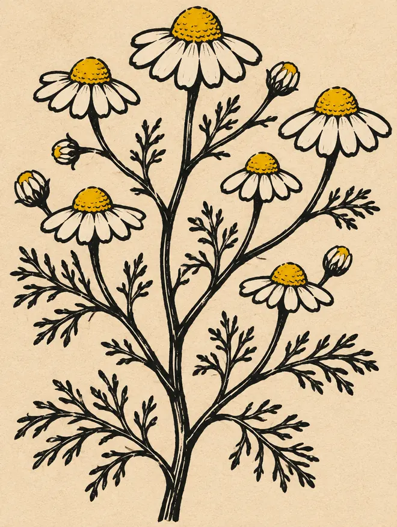

Caliente
Manzanilla
Matricaria chamomilla · Asteraceae
Ficha de demostración: el contenido y la clasificación deben ser validados por el líder del huerto.
Linograbado de la especie (ilustración generada con IA)
Maqueta B · ficha del huerto · capítulo verde chakra, plantas como carteles con linograbado
Comunidad demostrativa Sumak Kawsay · Tumbaco, Pichincha
Huerto de demostración preparado por el equipo a partir de un croquis provisional.
Recorrer en 3DReto Documentación lunar

Matricaria chamomilla · Asteraceae
Ficha de demostración: el contenido y la clasificación deben ser validados por el líder del huerto.
Linograbado de la especie (ilustración generada con IA)
Ruta graveolens · Rutaceae
Sin linograbado aún: la inicial en un campo de color ocupa su lugar (B-04 lo completaría).